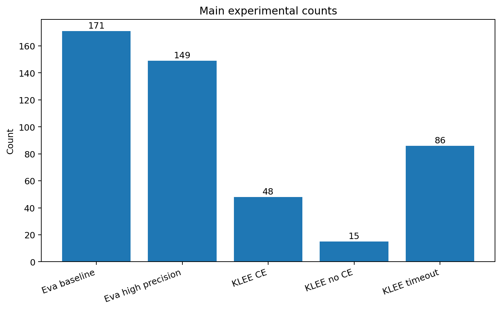
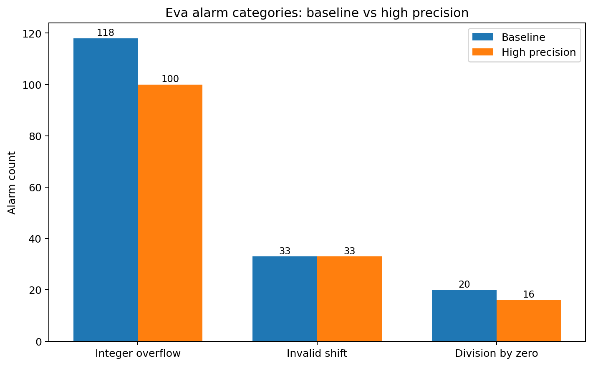
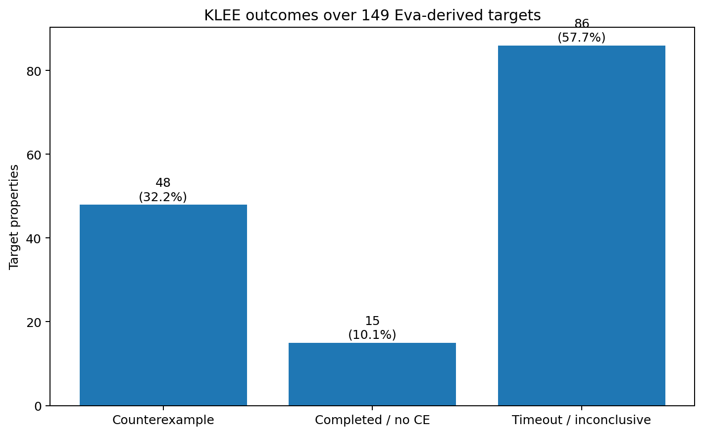
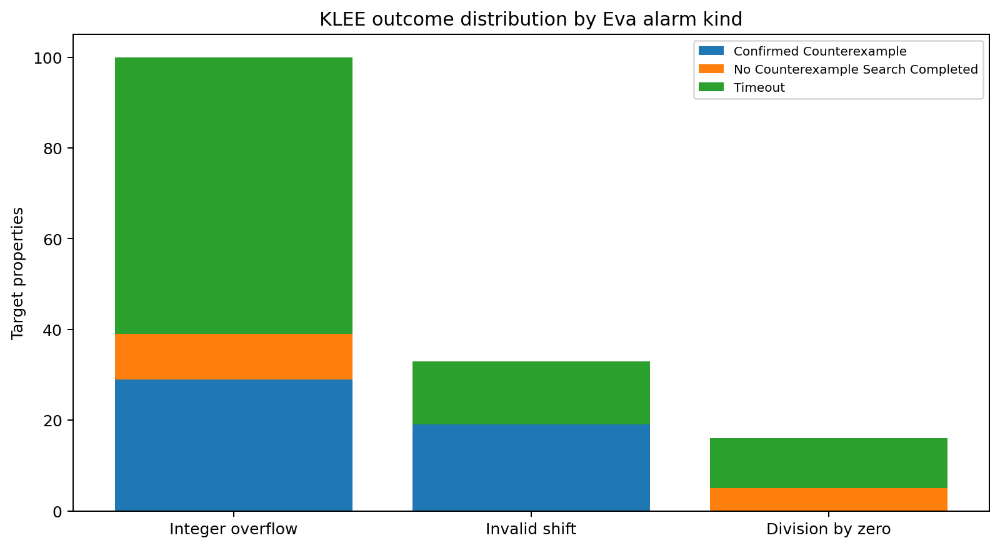
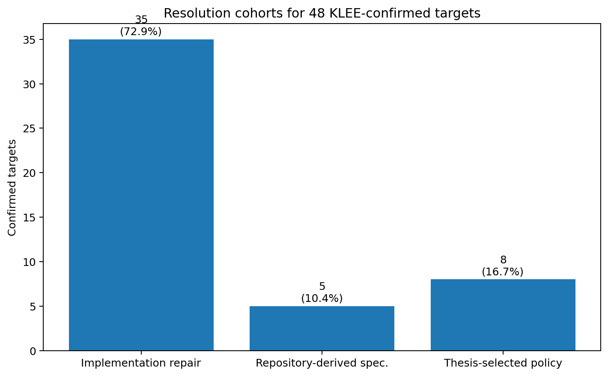
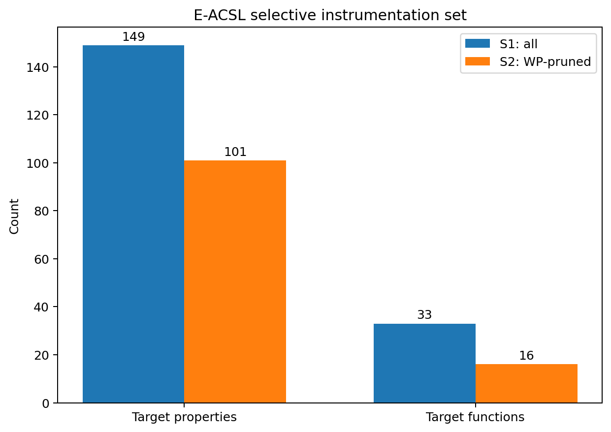
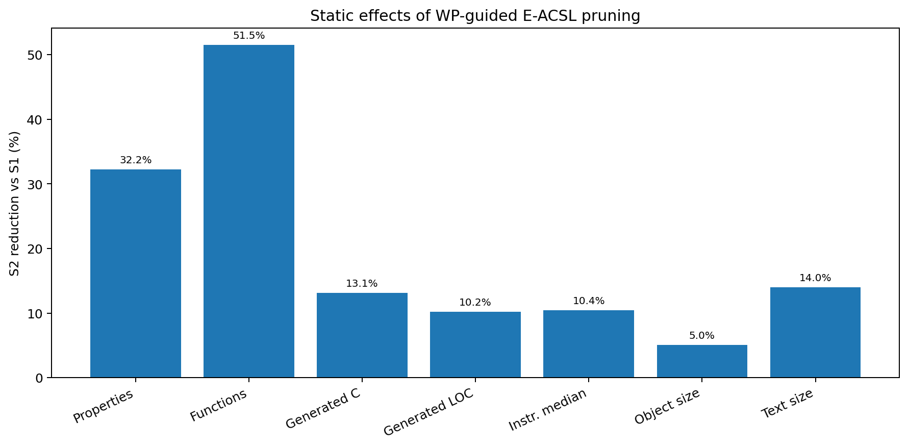
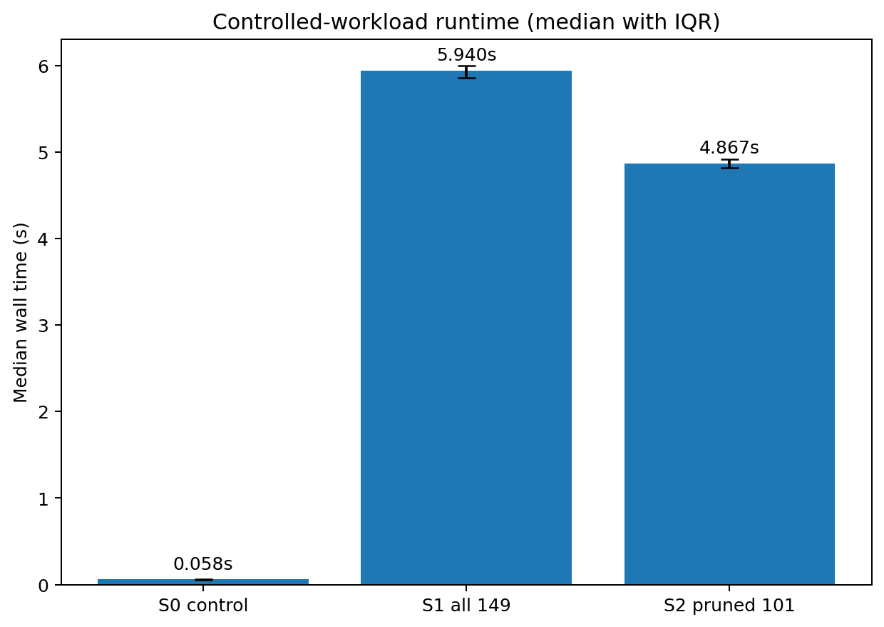
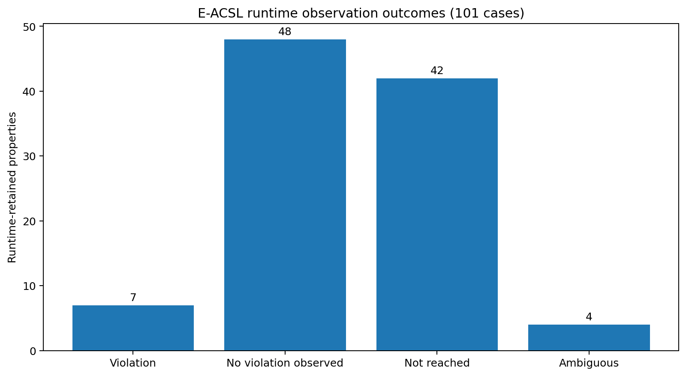
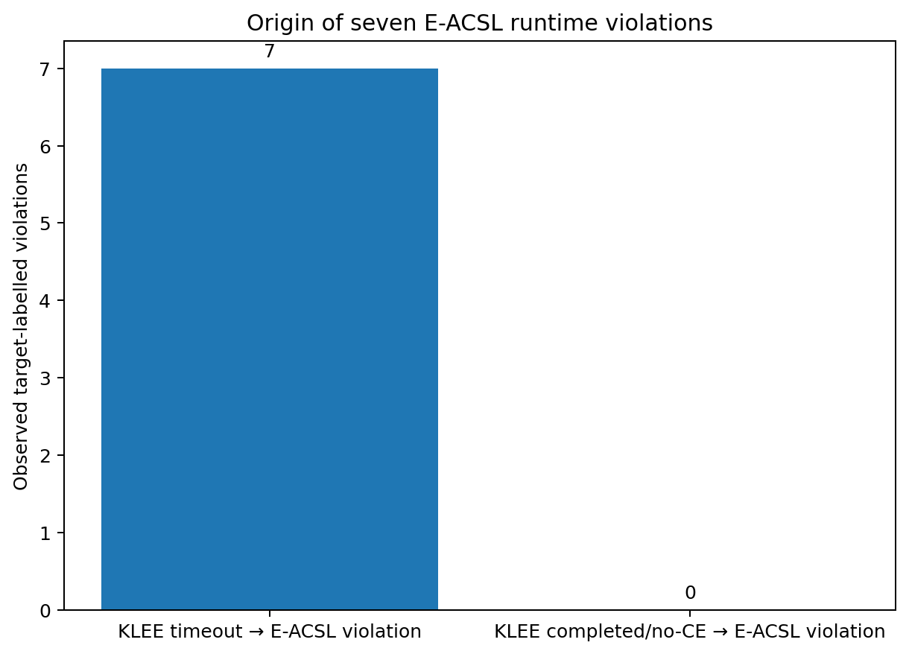

کاربرد این سند: این متن یک «مرجع استنتاج برای نگارش پایاننامه» است، نه نسخهی نهایی فصلبندیشدهی پایاننامه. هدف آن این است که تمام منطق، تنظیمات، دادهها، تصمیمها، نتایج، محدودیتها، جدولها و نمودارهای لازم را در یک جا جمع کند تا بتوان از هر قسمت، متناسب با ساختار فصلهای پایاننامه، متن نهایی استخراج کرد.
در این پروژه، 46 تابع C عمدتاً مرتبط با محاسبات fixed-point، ضرب، تقسیم، high-pass، average و rotate با یک workflow چندمرحلهای بررسی شدهاند. منطق اصلی workflow این بوده است که هیچ ابزار بهتنهایی بهعنوان داور نهایی همهی alarmها در نظر گرفته نشود و نوع شواهد هر ابزار حفظ شود:
خلاصهی کمی:
| مرحله | نتیجه |
|---|---|
| توابع in-scope | 46 |
| Eva baseline alarms | 171 |
| Eva high-precision alarms | 149 |
| حذفشده با precision بیشتر | 22 (12.865497%) |
| KLEE counterexample | 48 |
| KLEE completed / no counterexample | 15 |
| KLEE timeout / inconclusive | 86 |
| propertyهای materialized به ACSL | 149/149 |
| resolution برای KLEE-confirmed | 48/48 |
| WP-valid target properties | 48/48 |
| E-ACSL S1 | 149 property |
| E-ACSL S2 پس از WP pruning | 101 property |
| کاهش logical runtime checks | 32.214765% |
| کاهش median instrumentation time | 10.432191% |
| کاهش median runtime S2 نسبت به S1 | 18.055728% |
| runtime violations مشاهدهشده در 101 مورد | 7 |
| آن 7 مورد از KLEE timeout cohort | 7/7 |

هشدار یک static analyzer الزاماً «bug قطعی» نیست. برای مثال Eva ممکن است بهعلت over-approximation نتواند ثابت کند که یک overflow یا shift نامعتبر رخ نمیدهد. از طرف دیگر، نبود counterexample در symbolic execution نیز الزاماً proof نیست، چون search محدود به زمان، مسیر، constraint و harness است. همچنین runtime monitoring فقط رفتار ورودیهای اجراشده را میبیند و نمیتواند absence of violation را اثبات کند.
بنابراین طراحی workflow بر پایهی تفکیک نوع evidence انجام شده است:
این تمایز باید در متن پایاننامه حفظ شود؛ زیرا یکی از نقاط قوت روش این است که uncertainty در مرز مراحل از بین برده نشده است.
قواعد مفهومی workflow را میتوان بهصورت زیر بیان کرد:
Eva alarm
↓
Occurrence-specific property
↓
KLEE
├── Counterexample
│ ↓
│ Semantic resolution
│ ↓
│ Repair / Contract / Interface policy
│ ↓
│ Preserve original Eva property
│ ↓
│ WP
│ ├── Valid → eligible for runtime pruning
│ └── Unresolved → retain for runtime
│
├── Completed / no counterexample → retain for runtime
│
└── Timeout / inconclusive → retain for runtime
Runtime-retained properties
↓
E-ACSLاین معماری یک workflow property-centred است، نه فقط tool-centred. هویت هر مورد از alarm اولیه تا WP و E-ACSL حفظ شده است.
ادعای درست:
«یک workflow ترکیبی طراحی و ارزیابی شد که از Eva برای استخراج candidate safety properties، از KLEE برای تولید witness، از resolution و WP برای اثبات propertyهای حلشده، و از E-ACSL برای پایش runtime propertyهای باقیمانده استفاده میکند؛ سپس نتایج WP برای selective instrumentation به کار میروند.»
ادعای نادرست:
«کل برنامه formally verified شده است.»
در این پروژه WP فقط propertyهای هدف را بررسی کرده و
-wp-rte نیز عمداً استفاده نشده است.
جمعیت ثابت مطالعه شامل 46 تابع است. این توابع در شش translation unit اصلی قرار دارند:
MulHword.cavrg_Ccode.cdiv_Ccode.chip_Ccode.cmul_Ccode.crotatefunc.cفایل مرجع جمعیت توابع:
analysis/high_precision/functions.txt
و manifest اصلی:
analysis/high_precision/manifest.tsv
از 46 تابع، 13 تابع در High-Precision Eva هیچ alarm نداشتهاند؛ بنابراین 33 تابع حداقل یک property هدف داشتهاند.
سه نقش منبع باید در پایاننامه توضیح داده شود:
src_original: کد اصلی/مرجع.src_analysis: کد freezeشده برای تحلیل Eva و استخراج
evidence.src_repaired: tree جداگانه برای materialization
propertyها، repair و specification resolution.این جداسازی از نظر روش تحقیق مهم است، زیرا از مخلوطشدن evidence قبل و بعد از repair جلوگیری میکند.
| ابزار | نسخه/مدل |
|---|---|
| Frama-C | 33.0 (Arsenic) |
| Eva | Frama-C 33.0 |
| WP | Frama-C 33.0 |
| E-ACSL | bundled with Frama-C 33.0 |
| KLEE | 3.2 |
| LLVM/Clang برای KLEE | 13.0.x |
| GCC برای runtime E-ACSL | 13.3.0 |
| Why3 | 1.8.2 |
| Alt-Ergo | 2.6.2 |
| Z3 | 4.8.12 |
| CVC5 | 1.1.2 |
Eva و WP بر پایهی:
-machdep ppc_32اجرا شدهاند. در این مدل:
short = 16 bitint = 32 bitlong = 32 bitاین موضوع مهم است چون typedefهای پروژه s32/u32 را بر
مبنای signed long/unsigned long تعریف میکنند. روی host
x86-64، long برابر 64 بیت است؛ بنابراین اجرای مستقیم source
بدون semantic control برای KLEE معادل ppc_32 نیست.
برای KLEE، یک explicit-width semantic adapter استفاده شده تا scalar widths موردنیاز کنترل شوند. KLEE در محیط x86-64/LLVM اجرا شده است. این یک semantic gap ثبتشده است، نه چیزی که پنهان شده باشد.
در E-ACSL dynamic نیز اجرای PPC32 ممکن نبود، زیرا runtime instrumentation ساختهشده برای pointer چهار بایتی با host pointer هشتبایتی سازگار نبود. بنابراین dynamic evaluation با برچسب زیر گزارش شده است:
HOST_NATIVE_RUNTIME_WITH_PPC32_ANALYSIS_MODEL
این محدودیت باید در Threats to Validity پایاننامه بهصورت روشن ذکر شود.
Baseline باید یک نقطهی مرجع ثابت ایجاد کند تا اثر افزایش precision قابل اندازهگیری باشد. هدف این مرحله این نیست که همهی هشدارها را bug اعلام کنیم؛ بلکه میخواهیم بدانیم با تنظیمات نسبتاً پایهی Eva چه تعداد safety alarm ایجاد میشود.
Baseline برای همان 46 تابع، با source و harness یکسان، اجرا شده است.
تنظیم کلیدی ثبتشده:
-eva
-eva-slevel 1000
-eva-ilevel 256slevelslevel بودجهی جداسازی stateها را تحت تأثیر قرار میدهد.
وقتی شاخهها و iterationهای مختلف زود به هم join شوند، اطلاعات
relational/path-sensitive از دست میرود و intervalها بزرگتر میشوند. این
مسئله میتواند alarmهای بیشتری بسازد.
ilevelilevel میزان حفظ مجموعههای دقیق integer values را قبل از
تبدیل به approximationهای گستردهتر کنترل میکند. در fixed-point
arithmetic، حفظ مقادیر discrete و مرزی میتواند مستقیماً روی precision
تأثیر بگذارد.
Eva در مجموع 171 alarm تولید کرد:
| نوع alarm | تعداد | سهم از 171 |
|---|---|---|
| Integer overflow | 118 | 69.01% |
| Invalid shift | 33 | 19.30% |
| Division by zero | 20 | 11.70% |
| مجموع | 171 | 100% |

بزرگترین سهم مربوط به overflow است. این با ماهیت کد سازگار است: کد شامل fixed-point multiplication، division، تبدیل signed/unsigned، negation و arithmetic intermediate values است.
تعداد زیاد alarm در این مرحله نباید به معنی تعداد bug واقعی نوشته شود. جملهی مناسب برای پایاننامه:
«Baseline Eva تعداد 171 رخداد بالقوهی نقض ایمنی را گزارش کرد که 118 مورد overflow، 33 مورد invalid shift و 20 مورد division-by-zero بودند. این مجموعه بهعنوان candidate alarm set و مبنای مقایسهی precision استفاده شد.»
Abstract interpretation بهطور عمدی over-approximate است. اگر تحلیل نتواند رابطهی دقیق بین متغیرها، branch history، loop state یا non-linear expression را نگه دارد، ممکن است هشدار باقی بماند حتی وقتی path واقعی محدودتر است. بنابراین پیش از فرستادن 171 alarm به symbolic execution، منطقی بود که precision Eva افزایش یابد.
جدول ضروری: تعداد Baseline alarm به تفکیک نوع.
نمودار مناسب:
figures/01_eva_alarm_categories.png
نمودار تکمیلی:
figures/10_top_functions_eva.png برای نمایش concentration
هشدارها در توابع تقسیم.
هدف این مرحله کاهش alarmهای ناشی از ضعف precision، بدون تغییر source، harness، دامنهی ورودی یا suppress کردن alarm بود. برای حفظ validity آزمایش، یک profile یکنواخت روی تمام 46 تابع اعمال شده است؛ یعنی tuning اختصاصی per-function انجام نشده است.
پروفایل از -eva-precision 11 شروع شده و چند override
آگاهانه دارد. block اصلی:
-eva
-eva-precision 11
-eva-domains cvalue,equality,symbolic-locations,gauges,octagon,bitwise
-eva-equality-through-calls all
-eva-octagon-through-calls
-eva-interprocedural-splits
-eva-interprocedural-history
-eva-split-return full
-eva-subdivide-non-linear 500
-eva-ilevel 1024precision level 11 همچنین مقادیر مهم زیر را فراهم میکند:
| تنظیم | مقدار |
|---|---|
-eva-slevel |
5000 |
-eva-plevel |
2000 |
-eva-partition-history |
2 |
-eva-auto-loop-unroll |
1024 |
-eva-min-loop-unroll |
4 |
-eva-widening-delay |
6 |
slevel: 1000 → 5000state separation بیشتر باعث میشود branchها دیرتر merge شوند. برای کدی که safety property به شرایط شاخهها وابسته است، این افزایش میتواند bounds دقیقتری نگه دارد.
Interval مستقل برای هر متغیر همیشه کافی نیست. مثلاً اگر تحلیل بداند
x-y یا x+y محدود است، octagon میتواند
رابطههایی از فرم ±x ± y ≤ c را حفظ کند. equality نیز روابط
برابری بین temporaries و پارامترها را نگه میدارد.
equality-through-calls all
و octagon-through-callsبدون propagation بین caller/callee، بخشی از روابط هنگام عبور از helper function از بین میرود. این تنظیم بهویژه در کدی با helperهای arithmetic اهمیت دارد.
split-return fullاگر چند path با شرایط متفاوت در یک helper وجود داشته باشد، join زودهنگام در return میتواند اطلاعات شرطی را از بین ببرد. حفظ split و history کمک میکند caller حالتهای متفاوت را جدا ببیند.
subdivide-non-linear 500ضرب و division از مهمترین منابع imprecision هستند. subdivision budget بیشتر اجازه میدهد expressionهای non-linear روی زیرمحدودههای بیشتری تحلیل شوند و bound تنگتری تولید شود.
ilevel 1024مجموعهی بزرگتری از integer values بهصورت explicit حفظ میشود. برای fixed-point constants، shift countها و branch values مفید است.
bitwiseاطلاعات bit-level برای shift، mask و عملیات fixed-width میتواند precision را بالا ببرد.
تعداد alarm از 171 به 149 کاهش یافت:
171 - 149 = 22درصد کاهش:
22 / 171 × 100 = 12.865497%توزیع High Precision:
| نوع | Baseline | High Precision | حذفشده | کاهش در همان نوع |
|---|---|---|---|---|
| Integer overflow | 118 | 100 | 18 | 15.25% |
| Invalid shift | 33 | 33 | 0 | 0% |
| Division by zero | 20 | 16 | 4 | 20.00% |
| مجموع | 171 | 149 | 22 | 12.87% کل |
یک نتیجهی مهم این است که هیچ invalid-shift alarmی صرفاً با افزایش precision حذف نشد. در مقابل، 18 overflow و 4 division-by-zero حذف شدند. این نشان میدهد invalid shiftهای باقیمانده عمدتاً به domain/semantics واقعی count مربوط بودهاند و صرفاً محصول join ضعیف نبودهاند.
بیشترین حذفها در خانوادههای division رخ داده است. نمونههای شاخص:
| تابع | Baseline | High Precision | حذف |
|---|---|---|---|
s16_div_s32_s16 |
25 | 20 | 5 |
s16_mul_s16_u16_div_s16 |
11 | 8 | 3 |
s16_mul_s16_s16_div_s16 |
11 | 8 | 3 |
u16_mul_s16_u16_div_s16 |
11 | 9 | 2 |
s16_fac05_div_s16_s16 |
11 | 9 | 2 |
u16_div_s32_u16 |
7 | 5 | 2 |
s16_mul_s16_s16_div_u16 |
7 | 5 | 2 |
این الگو با این فرض سازگار است که relational/path/non-linear precision در expressionهای quotient/remainder و branchهای division سود بیشتری ایجاد کرده است.
اما: از این داده نمیتوان گفت «مثلاً فقط octagon باعث حذف alarm X شد». profile بهصورت ترکیبی تغییر کرده و گزارش رسمی نیز causal labels را evidence-backed inference میداند، نه آزمایش ablation برای هر option.
چون:
| # 5. Materialization: تبدیل 149 alarm به ACSL propertyهای occurrence-aware |
| ## 5.1 چرا این مرحله ضروری بود؟ |
| بین «alarm ابزار Eva» و «property قابلردیابی در مراحل دیگر» تفاوت وجود دارد. اگر فقط متن log یا line number نگه داشته شود، بعد از repair یا جابهجایی خطوط، traceability از بین میرود. علاوه بر این ممکن است چند alarm در یک statement یا چند occurrence مشابه وجود داشته باشد. |
| بنابراین هر یک از 149 alarm High-Precision به یک ACSL assertion یکتا تبدیل شد: |
text eva_klee_alarm_0001 ... eva_klee_alarm_0149 |
این تبدیل در src_repaired انجام شد و قبل از repair
freeze شد. |
| ## 5.2 اصل occurrence identity |
| هویت property صرفاً «شماره خط» نیست. در manifest موارد زیر نگهداری شدهاند: |
| - Alarm ID - Function - Source file - Original source line - Occurrence index - Alarm kind - Source expression - Raw Eva predicate - Inserted ACSL predicate - ACSL label - KLEE outcome - Current repaired-tree location - Future mode (WP یا runtime) |
| این کار برای پایاننامه مهم است، چون chain زیر را ممکن میکند: |
text Eva alarm occurrence ↔︎ ACSL label ↔︎ KLEE target ↔︎ witness / status ↔︎ repair/specification ↔︎ WP goal ↔︎ E-ACSL instrumentation decision |
| ## 5.3 نتیجهی integrity |
| - Targetهای High-Precision: 149 - ACSL labels: 149 - Unique labels: 149 - Missing: 0 - Duplicate: 0 |
| Pre-repair freeze: |
- Commit: 93667d5... - Tag:
thesis/eva-149-acsl-properties-before-repair |
| ## 5.4 اصل مهم علمی: property اصلی تغییر نکرد |
| در repairهای بعدی هدف این نبود که assertion را طوری تغییر دهیم که اثبات آسان شود. property باید نمایندهی همان safety condition استخراجشده از Eva باقی بماند. |
| مثلاً اگر Eva گفته بود: |
c value != INT32_MIN |
| راه نادرست این بود که property را به یک precondition یا شرط ضعیفتر تبدیل کنیم و سپس ادعا کنیم مشکل حل شده است. راه استفادهشده این بود که implementation path طوری اصلاح شود که operation خطرناک فقط وقتی اجرا شود که property برقرار است، و assertion اصلی حفظ شود. |
| ## 5.5 پیشنهاد برای پایاننامه |
| یک شکل کوچک از mapping زیر بسیار مفید است: |
text Eva log ↓ parse/normalize Alarm occurrence record ↓ ACSL label eva_klee_alarm_NNNN ↓ Same stable ID used by KLEE / WP / E-ACSL |
| این بخش نشاندهندهی contribution مربوط به traceability است و بهتر است صرفاً بهعنوان «اضافه کردن assert» توصیف نشود. |
KLEE در این پروژه نقش proof engine نداشته است. سؤال KLEE این بوده:
«آیا میتوان برای property مشخصی که Eva گزارش کرده، یک ورودی concrete پیدا کرد که آن safety condition را نقض کند؟»
این framing مهم است؛ چون outcomeهای KLEE سهحالتهاند:
فقط حالت اول evidence مثبت برای violability است.
برای هر یک از 149 alarm یک directory مستقل ساخته شد. این تصمیم چند دلیل دارد:
.err بهصورت قابلاعتماد به یک property
وصل میشود.ساختار مفهومی هر target:
alarm_NNNN/
├── target source copy
├── klee_harness.c
├── build_bitcode.sh
├── runner
├── build/*.bc
└── klee-out-alarm-NNNN/
├── testXXXXXX.ktest
└── testXXXXXX.klee-alarm-NNNN.errپارامترهای تابع با typeهای fixed-width معادل symbolic شدهاند. مثال:
value : s32
factor : s16
count : u32برای جلوگیری از semantic mismatch ناشی از long در
x86-64، Phase A یک explicit-width semantic architecture را توصیه و
پیادهسازی کرده است.
برای operationهایی مثل signed overflow، shift نامعتبر یا division-by-zero، اتکا به اینکه KLEE خود UB را همیشه به همان صورت گزارش کند کافی نیست. بنابراین safety predicate قبل از operation هدف بهصورت صریح بررسی شده است.
مزیت:
اگر پیش از target موردنظر یک UB دیگر رخ دهد، ممکن است KLEE اصلاً به target نرسد. برای isolate کردن target، در analysis copy guardهایی برای defined prefix گذاشته شدهاند تا UBهای قبلی بیربط target را نپوشانند.
اما این guardها نباید با klee_assumeهای arbitrary اشتباه
گرفته شوند. هدف آنها narrow کردن domain به نفع property نبوده است، بلکه
فراهمکردن یک prefix تعریفشده برای رسیدن به occurrence هدف بوده است.
این نکته برای دفاع مهم است؛ چون ممکن است سؤال شود آیا harness با assumptionها counterexample را مصنوعی ساخته یا حذف کرده است.
در پروژه:
typedef signed long s32;
typedef unsigned long u32;روی PPC32، long=32 bit; روی x86-64،
long=64 bit.
بنابراین source بدون adapter نباید مستقیماً معادل Eva تلقی شود. گزارش Phase A سه گزینه را بررسی کرده و ترکیب environment reproducible + explicit-width adapter را پیشنهاد داده است.
این محدودیت باید با wording دقیق بیان شود:
«KLEE witnessها در یک مدل fixed-width کنترلشده تولید شدند که برای arithmetic scalar targetها widthهای اصلی را بازنمایی میکند، اما معادل کامل ABI/endianness PowerPC ادعا نمیشود.»
هر 149 target build و execute شد. timeout اصلی KLEE برای موارد طولانی 1800 ثانیه بوده و elapsedهای timeout معمولاً حدود 1830 ثانیه ثبت شدهاند (با overhead wrapper/timeout).
در مجموعهی frozen:
این یعنی تمام 149 مورد حداقل از نظر experimental execution account شدهاند.
| KLEE outcome | تعداد | درصد از 149 |
|---|---|---|
| Confirmed counterexample | 48 | 32.214765% |
| Completed / no counterexample | 15 | 10.067114% |
| Timeout / inconclusive | 86 | 57.718121% |
| مجموع | 149 | 100% |

برای target-specific .err و KTest matching evidence وجود
دارد. یعنی KLEE یک concrete assignment پیدا کرده که predicate مشخص را در
مدل prepared نقض میکند.
فقط به معنی:
«در harness، constraints، search strategy و resource configuration فعلی، search تکمیل شد و target witness مشاهده نشد.»
این حالت proof نیست.
search در زمان تعیینشده به نتیجهی قطعی نرسیده است. این مورد باید unresolved بماند، نه safe و نه unsafe.
در سه مورد witness قبل از timeout بعدی ایجاد شده بود. Primary outcome همچنان counterexample باقی مانده است، چون evidence لازم پیش از timeout موجود بوده. timeout در این حالت secondary metadata است و نباید target دوبار شمرده شود.
| Alarm kind | کل | Counterexample | No CE | Timeout | CE rate | Timeout rate |
|---|---|---|---|---|---|---|
| Integer overflow | 100 | 29 | 10 | 61 | 29.00% | 61.00% |
| Invalid shift | 33 | 19 | 0 | 14 | 57.58% | 42.42% |
| Division by zero | 16 | 0 | 5 | 11 | 0.00% | 68.75% |

Invalid shiftها بیشترین نرخ witness را داشتهاند. این منطقی است، چون
shift-count boundaryهایی مانند 0, 31,
32, UINT_MAX معمولاً constraint structure
سادهتری نسبت به pathهای quotient/remainder پیچیده دارند.
Division-by-zeroها در این campaign counterexample مستقیم ندادند؛ اما این نباید به معنی safe بودن همهی آنها تعبیر شود، چون 11/16 timeout بودهاند.
div_Ccode.cتوزیع 149 property بر اساس source file:
| Source file | HP properties | KLEE CE | No CE | Timeout |
|---|---|---|---|---|
div_Ccode.c |
102 | 10 | 6 | 86 |
mul_Ccode.c |
29 | 27 | 2 | 0 |
hip_Ccode.c |
10 | 4 | 6 | 0 |
MulHword.c |
6 | 6 | 0 | 0 |
avrg_Ccode.c |
1 | 0 | 1 | 0 |
rotatefunc.c |
1 | 1 | 0 | 0 |
تمام 86 timeout در div_Ccode.c قرار
دارند. این یکی از مهمترین الگوهای تجربی پروژه است.
Division familyها دارای ترکیبی از:
هستند. این ساختار برای symbolic path exploration و SMT constraints سختتر از بسیاری از multiplication/shift helpers بوده است. بنابراین دادهها نشان میدهند bottleneck KLEE بهصورت یکنواخت در کل پروژه پخش نشده است.
این نتیجه را بهتر است بهصورت «observed concentration» بنویسیم، نه اینکه بدون ablation بگوییم division ذاتاً علت timeout بوده است.
از analysis/klee_phase_c/results/summary.tsv، جمع
elapsed ثبتشده برای 149 target حدود:
165,047 seconds ≈ 45.85 hoursاست. تفکیک تقریبی:
یعنی تقریباً تمام هزینهی زمانی symbolic execution توسط timeout cohort مصرف شده است. این داده برای توجیه استفاده از runtime monitoring در ادامه بسیار مهم است: ادامهی افزایش budget برای همهی unresolvedها هزینهی زیادی دارد و guarantee نتیجه نیز ندارد.
این عدد «جمع elapsed per-target ثبتشده» است؛ اگر اجراها parallel یا با شرایط دیگر انجام شده باشند، نباید آن را calendar wall-clock واقعی کل پروژه نامید.
figures/03_klee_outcomes.pngfigures/04_klee_outcome_by_alarm_kind.pngبرای اینکه یک target واقعاً CONFIRMED_COUNTEREXAMPLE
باشد، evidence زیر باید با همان ID منطبق باشد:
KLEE-ALARM-NNNN باشد؛.err وجود داشته باشد؛این سختگیری جلوی این خطا را میگیرد که صرف وجود نام یک Alarm ID در comment یا error دیگر بهعنوان witness اشتباه ثبت شود.
Operation:
-valueEva property:
value != INT32_MINKLEE witness:
value = -2147483648 (0x80000000)
factor = 1
count = 0منطق:
در arithmetic signed 32-bit، magnitude مثبت INT32_MIN
قابل نمایش نیست؛ بنابراین -INT32_MIN overflow است.
این مثال برای پایاننامه بسیار مناسب است، چون chain از alarm تا witness و repair واضح است.
Operation:
u32Temp3 >> countEva property:
0 <= count && count < 32KLEE witness:
count = UINT32_MAXدر اینجا KLEE فقط نشان میدهد shift-count domain قابل نقض است؛ اما نمیگوید رفتار صحیح برای چنین countی چیست. همین تفاوت باعث شد بعضی targetها مستقیماً repair نشوند و ابتدا specification resolution لازم شود.
Counterexample فقط یک input نیست؛ یک semantic obligation ایجاد میکند:
«برای این input میدانیم operation فعلی safety property را نقض میکند؛ اکنون باید بفهمیم behavior صحیح سیستم چه باید باشد.»
این distinction بین bug detection و repair semantics یکی از بخشهای مهم روش است.
از 149 property:
Repair فقط روی confirmed cohort انجام شد؛ 101 مورد دیگر عمداً implementation change نگرفتند.
اگر برای timeout/no-CE کد تغییر داده میشد، evidence کافی برای ضرورت تغییر وجود نداشت و احتمال patch کردن behavior درست یا changing semantics بدون witness وجود داشت.
هر repair باید:
از 48 confirmed target:
REPAIR_POLICY_REQUIRED باقی ماندند.چهار commit اصلی implementation repair اولیه:
afea041...7aa2299...57864b4...61a2ce3...INT32_MIN negationقبل از repair، path میتوانست به:
u32Temp1 = -value;با value == INT32_MIN برسد.
Repair conceptual:
if (value == INT32_MIN) {
u32Temp1 = 0x80000000U;
} else {
/*@ assert eva_klee_alarm_0001:
value != INT32_MIN;
*/
u32Temp1 = -value;
}نکات مهم:
Counterexample میگوید property قابل نقض است، اما semantics صحیح را
تعیین نمیکند. برای مثال count >= 32 را میتوان به چند شکل
handle کرد:
بدون evidence، انتخاب یکی از اینها یک design decision دلخواه است. بنابراین توقف repair در 16 مورد از نظر روش تحقیق یک مزیت بوده، نه failure.
| # 10. Repair-Policy Resolution: حل 3 مورد و نگهداشتن 13 مورد ambiguous |
| ## 10.1 ورودی |
| 16 target policy-required شامل: |
- 13 shift semantics - 2 high-pass shared-operation
(0061, 0066) - 1 signed-minimum division
(0144) |
| ## 10.2 Alarmهای 0061 و 0066 |
| مشکل در high-pass calculation مربوط به doubling یک مقدار signed بود. روی path منفی، left shift روی signed negative value رفتار تعریفنشده/نامعتبر ایجاد میکرد. |
| Semantic evidence از formula، sibling implementationها، comments و rangeها نشان داد که operation موردنظر در واقع ضرب ریاضی در 2 است. |
| Resolution: |
- اگر s32Temp2 >= 0: shift اصلی
s32Temp2 << 1 حفظ شد. - اگر
s32Temp2 < 0: از s32Temp2 * 2 استفاده
شد. |
| Commit مشترک: |
f5daa364e14957ae7410fd2d347917ab6555f046 |
| ### چرا این repair قابل دفاع است؟ |
| چون policy جدید arbitrary نیست؛ operation جدید همان scaling ریاضی را با semantics تعریفشده برای negative input پیاده میکند. |
| ## 10.3 Alarm 0144 |
Witness مربوط به signed-minimum division path بود. مشکل اصلی این است
که گرفتن magnitude signed INT32_MIN بهصورت signed ممکن
نیست. |
| Resolution: |
- magnitude INT32_MIN بهصورت unsigned
0x80000000U نمایش داده شد؛ - denominator منفی نیز به
unsigned magnitude تبدیل شد؛ - algorithm existing quotient + doubled
remainder حفظ شد؛ - ordinary path negation و property اصلی باقی
ماند. |
| Commit: |
b8b767816bdbe2e38196b9e81b57b48384daeca5 |
برای witness INT32_MIN / INT32_MIN، نتیجهی ریاضی مورد
انتظار 1 است و repair این semantics را حفظ میکند. |
| ## 10.4 تعامل با runtime-only propertyها |
0061/0066 physical statementهایی داشتند که runtime-only alarms
0062/0067 نیز به آنها مربوط بودند. 0144 نیز با
0145–0149 در downstream path interaction داشت. |
| اصل تصمیم: |
| - repair confirmed target انجام شود؛ - runtime-only propertyها reclassify نشوند؛ - assertionهای آنها حفظ شوند؛ - cross-effect source-level مستند شود. |
| ## 10.5 نتیجهی فاز |
| - repaired قبلی: 32 - newly repaired: 3 - total implementation repaired: 35 - remaining ambiguous: 13 |
| این 13 مورد همگی shift-related بودند. |
13 target با invalid shift باقی مانده بودند. سؤال اصلی دیگر این نبود که «shift نامعتبر است یا نه»؛ KLEE آن را نشان داده بود. سؤال دقیقتر:
آیا
countخارج از بازه یک input نامعتبر برای API است، یا تابع باید آن را runtime handle کند؟
این distinction بین input-domain contract و implementation obligation است.
13 target به 7 semantic group کاهش یافتند. callerهای واقعی، macroها، siblingها و integer promotionها بررسی شدند.
مشاهدهی کلیدی:
| Helper group | C wrapper count | Public macro constant |
|---|---|---|
| signed s16 | 16 | 65536 |
| signed s8 | 8 | 256 |
| signed u16 | 17 | 131072 |
| signed u8 | 9 | 512 |
| unsigned s16 | 15 | 16 |
| unsigned s32 | 32 | 32 |
| unsigned s8 | 8 | 8 |
در سه group unsigned، callerهای موجود با یک count domain واضح سازگار بودند. در چهار signed group، public macroها بهجای count ظاهراً power-of-two/divisor میدادند.
Repository evidence برای پنج target کافی بود:
/*@ requires 1 <= count && count < 32; *//*@ requires 32 <= count && count < 64; *//*@ requires 1 <= count && count < 32; */تمام production callerهای شناختهشده این contractها را satisfy میکردند.
0002, 0003, 0005, 0006, 0009, 0010, 0012, 0013
چرا unresolved؟ چون public macro constantها با semantics bit-count helper سازگار نبودند. Repository بهصورت یکتا مشخص نمیکرد که parameter سوم:
بنابراین هنوز contract اضافه نشد و fallback implementation نیز ساخته نشد.
این مرحله نشان داد static alarm گاهی به specification gap اشاره میکند، نه صرفاً coding bug.
برای تکمیل چرخهی 48 confirmed target، هشت مورد unresolved با یک thesis-level explicit policy resolve شدند؛ اما origin این policy بهصورت شفاف ثبت شد تا به اشتباه legacy specification تلقی نشود.
| Cohort | تعداد | درصد از 48 | معنا |
|---|---|---|---|
| Implementation repair | 35 | 72.92% | تغییر کد با semantics پشتیبانیشده توسط repository |
| Repository-derived specification | 5 | 10.42% | materialize کردن input-domain contract مستدل |
| Thesis-policy-selected | 8 | 16.67% | تعریف صریح policy جدید برای interface مبهم |

Policy انتخابی:
public fixed-point interface power-of-two scaling semantics خود را حفظ میکند؛ low-level helper فقط bit count میگیرد؛ تبدیل public constant به bit count بهصورت exact static mapping انجام میشود.
Mappings:
| Alarm group | Public value | Internal count | Helper contract |
|---|---|---|---|
| 0002/0003 | 65536 | 16 | 1 <= count && count < 32 |
| 0005/0006 | 256 | 8 | 1 <= count && count < 32 |
| 0009/0010 | 131072 | 17 | 1 <= count && count < 32 |
| 0012/0013 | 512 | 9 | 1 <= count && count < 32 |
هیچ runtime logarithm، mask، clamp، modulo یا arbitrary fallback اضافه نشده است.
requiresبرای پنج مورد:
«بر اساس callerها و interface موجود repository، دامنهی معتبر ورودی بهصورت contract استخراج و materialize شد.»
برای هشت مورد:
«بهدلیل specification ناقص legacy interface، پایاننامه یک policy صریح و سازگار برای مرز public scaling interface و internal bit-count helper تعریف کرد.»
نباید نوشته شود:
«repository ثابت کرد 65536 باید به 16 تبدیل شود.»
چون این یک thesis-selected design policy است.
WP برای هر یک از 48 target این سؤال را بررسی کرده است:
«آیا در implementation/specification resolved فعلی، همان Eva-derived assertion انتخابشده در نقطهی هدف قابل اثبات است؟»
هر command شامل:
-machdep ppc_32
-wp
-wp-fct <function>
-wp-prop eva_klee_alarm_NNNN
-wp-model Typed+intProvers available:
Why3 1.8.2 برای external provers.
-wp-rte استفاده
نشد؟هدف آزمایش «proof همان property استخراجشده از Eva» بود، نه تولید و اثبات تمام runtime-error obligations تابع. بنابراین:
-wp-rteعمداً وجود نداشت.
در نتیجه warning:
[wp] Warning: Missing RTE guardsدر این طراحی expected است و failure proof محسوب نمیشود.
این نکته را حتماً در پایاننامه بنویسید، چون در غیر این صورت reviewer ممکن است از 48/48 نتیجهی بیش از حد برداشت کند.
VALID_AUTOMATIC یعنی همهی proof obligationهای مربوط به
property انتخابشده discharge شدهاند.
Exit code 0 بهتنهایی proof نیست. evidence از goal count، Qed و external prover result گرفته شده است.
برای targetهایی که function-level contract دارند، WP اجازه دارد
requires را assumption معتبر تابع در نظر بگیرد. بنابراین
proof conditional است:
valid input domain
⇒ control/data flow
⇒ original Eva assertionاین proof نباید به arbitrary direct calls خارج از contract تعمیم داده شود.
فقط 32 target repairشدهی اولیه اجرا شدند؛ 16 policy-required هنوز WP eligible نبودند.
Verification rate among eligible:
32 / 32 = 100%Coverage نسبت به همهی 48 confirmed در آن checkpoint:
32 / 48 = 66.67%Alarm 0017 حدود 131.91 s طول کشید. Alt-Ergo timeout شد
ولی Z3 و CVC5 آن را prove کردند؛ بنابراین target نهایی
VALID_AUTOMATIC است.
جمع wall-clock ثبتشده برای 32 target:
166.626282879 s
این مقدار تحت تنظیمات ثابت برای همهی targetهای campaign بهدست آمده است.
پس از policy-resolution سه repair جدید WP-ready شدند.
| Alarm | Goals | Qed | External | Runtime |
|---|---|---|---|---|
| 0061 | 1/1 | Valid | Not invoked | 0.559338 s |
| 0066 | 1/1 | Valid | Not invoked | 0.617537 s |
| 0144 | 1/1 | Valid | Not invoked | 0.696125 s |
هر سه فقط با Qed بسته شدند.
نتیجهی تجمعی در این نقطه:
35 repaired / 35 WP-validREPOSITORY_INFERREDTHESIS_POLICY_SELECTEDهر دو cohort 100% WP-valid شدند، ولی معنای proof یکسان نیست.
برای thesis-policy:
WP نشان میدهد property تحت policy صریح انتخابشده در این پژوهش برقرار است.
برای repository-derived:
WP نشان میدهد property تحت contract استنتاجشده از شواهد repository برقرار است.
13/13 VALID_AUTOMATIC:
این نکته اهمیت دارد: configured بودن prover به معنی استفادهشدن آن نیست؛ report فقط actual invocation را میشمارد.
32 + 3 + 13 = 48تمام 48 property:
VALID_AUTOMATIC = 48 / 48 = 100%| معیار | تعداد |
|---|---|
| Qed-only | 35 |
| نیازمند external prover | 13 |
| Alt-Ergo Valid | 12 |
| Alt-Ergo Timeout | 1 |
| Z3 Valid | 6 |
| CVC5 Valid | 6 |
| Multiple external-prover agreement | 6 |
| Exactly one external prover succeeded | 7 |
مجموع recorded wall-clock:
183.910237408 s
جملهی مناسب:
«Frama-C/WP تمام 48 Eva-derived target property انتخابشده را پس از resolution و تحت context مستندشدهی implementation repair، repository-derived contract یا thesis-selected policy، با مدل
ppc_32وTyped+intاثبات کرد.»
جملههای نامناسب:
WP در این workflow نقش مهم دیگری نیز پیدا میکند: proof نتیجهای اجرایی برای مرحلهی runtime دارد. یعنی property ثابتشده دیگر لازم نیست در configuration selective E-ACSL monitor شود.
| # 18. طراحی Selective Instrumentation با E-ACSL |
| ## 18.1 پرسش آزمایش |
| بعد از اینکه 48 property با WP ثابت شدند، سؤال جدید این شد: |
| > «آیا میتوان propertyهایی را که proof deductive دارند از instrumentation زمان اجرا حذف کرد و هزینهی E-ACSL را کاهش داد، در حالیکه propertyهای unresolved همچنان monitor شوند؟» |
| این پرسش یکی از مهمترین پلهای بین static verification و runtime verification در پژوهش است. |
| ## 18.2 سه سناریو |
| ### S0 — Control |
| کد بدون target instrumentation E-ACSL. |
| کاربرد: |
| - baseline compilation/runtime - اندازهی object و text - مقایسهی overhead کلی |
| ### S1 — Full Eva set |
| تمام 149 Eva-derived target property instrument میشوند. |
| ### S2 — WP-pruned |
| 48 property که WP آنها را Valid کرده حذف میشوند و فقط: |
text 149 - 48 = 101 |
| property باقیمانده runtime monitor میشوند. |
 |
| ## 18.3 چرا selection باید property-level باشد؟ |
| فرض کنید یک تابع 5 property دارد: |
| - 2 property WP-valid - 3 property unresolved |
| اگر کل function را از instrumentation حذف کنیم، سه obligation unresolved نیز از بین میروند. بنابراین pruning باید بر اساس label/property باشد، نه صرفاً function. |
| این پروژه عملاً این مسئله را داشت: 6 تابع mixed بودند که هم property حذفشده و هم retained داشتند. |
| Mixed functions: |
1. s16_fac05_div_s16_s16 2.
s16_fac05_div_s16_u16 3.
s16_hip1_s16_s8_s8_u16_fac1 4.
s16_hip1_s16_u8_u8_u16_fac1 5. s32_div_s32_s32
6. u32_div_s32_s32 |
| بنابراین property-level selection یک نیاز واقعی dataset بوده است، نه طراحی نظری اضافه. |
| ## 18.4 محدودیت E-ACSL نصبشده |
| E-ACSL موجود در Frama-C 33.0 امکان function-level filtering دارد، اما exact property-label filtering مناسب این آزمایش را ارائه نمیداد. |
| راهحل: |
- canonical src_repaired دستنخورده ماند؛ - generated
source view deterministic ساخته شد؛ - selected assertionها verbatim
active ماندند؛ - excluded assertionها فقط در experiment copy به inert
comment تبدیل شدند؛ - auxiliary ACSL کنترل شد تا countهای headline آلوده
نشوند. |
| این workaround باید در پایاننامه شفاف گزارش شود، چون خودش یک Threat to Validity است. |
| ## 18.5 Integrity audit |
| برای معتبر بودن performance comparison، ابتدا باید ثابت شود S1 و S2 دقیقاً property set موردنظر را دارند. |
| نتیجه: |
| - S1 present: 149/149 - S2 retained: 101/101 - WP-valid in S1: 48/48 - WP-valid absent from S2: 48/48 - retained intersection lost: 0 |
| یعنی transformation دقیقاً: |
text S1 = WP_VALID_48 ∪ RUNTIME_101 S2 = RUNTIME_101 WP_VALID_48 ∩ RUNTIME_101 = ∅ |
| ## 18.6 کاهش function-level حاصل از property pruning |
| اگرچه pruning property-level بوده، نتیجهی طبیعی آن این بوده که برخی functionها تمام targetهایشان WP-valid شده و کاملاً از S2 runtime target set خارج شدهاند. |
| تعداد: |
| - S1 target functions: 33 - S2 target functions: 16 - removed functions: 17 - کاهش: 51.515152% |
| 17 تابع حذفشده: |
- root_s32_mul_s32_s16_fac_less1 -
root_s32_mul_s32_s8_fac_less1 -
root_s32_mul_s32_u16_fac_less1 -
root_s32_mul_s32_u8_fac_less1 -
root_u32_mul_u32_s16_fac_less1 -
root_u32_mul_u32_s32_fac_less1 -
root_u32_mul_u32_s8_fac_less1 - rotateRight -
s16_div_s32_u32 - s32_div_s32_u32 -
s32_div_u32_s32 - s32_mul_s32_s16_fac2 -
s32_mul_s32_s32 - s32_mul_s32_s32_fac2 -
s32_mul_s32_s32_fac_twopow_u8 -
s32_mul_s32_s8_fac2 - s32_mul_u32_s32 |
| ## 18.7 توزیع propertyها بر اساس source file |
| فایل | S1 properties | WP-valid | S2 retained | S1 funcs | S2
funcs | |—|—:|—:|—:|—:|—:| | MulHword.c | 6 | 6 | 0 | 5 | 0
| | avrg_Ccode.c | 1 | 0 | 1 | 1 | 1 | |
div_Ccode.c | 102 | 10 | 92 | 15 | 12 | |
hip_Ccode.c | 10 | 4 | 6 | 2 | 2 | |
mul_Ccode.c | 29 | 27 | 2 | 14 | 1 | |
rotatefunc.c | 1 | 1 | 0 | 1 | 0 | |
| ### تفسیر مهم |
| S2 بهشدت روی division code متمرکز شده است: |
text 92 / 101 ≈ 91.1% |
propertyهای retained در div_Ccode.c هستند. این با KLEE
نیز همجهت است، چون تمام 86 timeout در همین فایل قرار داشتند. |
| این همبستگی نشان میدهد سختترین بخش برای symbolic execution همان بخشی است که بیشترین runtime monitoring obligation را نیز پس از WP نگه داشته است. |
پیش از داشتن runtime workload، اثر selective instrumentation بر:
اندازهگیری شد.
/usr/bin/time -v و ابزارهای size/stat استفاده شدنددر static stage executable نهایی وجود نداشت، چون repository
authoritative main نداشت. بنابراین object size و text size
بهعنوان static proxy گزارش شدند.
| معیار | S1 | S2 | کاهش |
|---|---|---|---|
| Logical target properties | 149 | 101 | 32.214765% |
| Unique target functions | 33 | 16 | 51.515152% |
| معیار | S1 | S2 | کاهش |
|---|---|---|---|
| Generated bytes | 392,143 | 340,661 | 13.128374% |
| Generated LOC | 9,942 | 8,925 | 10.229330% |
نکتهی مهم:
32.21% property reduction فقط 13.13% byte reduction داده است. دلیل این است که E-ACSL هزینههای مشترک و runtime support code دارد و هر property سهم یکسانی در generated code ندارد.
10 repetition:
| Scenario | Mean | Median | SD | Min | Max | Median peak RSS |
|---|---|---|---|---|---|---|
| S1 | 6.903 s | 6.710 s | 0.424 | 6.620 | 7.890 | 205,158 KiB |
| S2 | 6.010 s | 6.010 s | 0.199 | 5.770 | 6.420 | 204,364 KiB |
کاهش:
instrumentation processing زمانمحور از pruning سود قابلاندازهگیری گرفته، ولی memory تقریباً ثابت مانده است. این میتواند نشان دهد بخش عمدهی memory مربوط به fixed parsing/AST/runtime machinery است، نه صرفاً تعداد target checks.
| Scenario | Mean | Median | SD | Min | Max | Median peak RSS |
|---|---|---|---|---|---|---|
| S0 | 1.172 | 1.165 | 0.074 | 1.090 | 1.310 | 50,422 KiB |
| S1 | 1.719 | 1.725 | 0.038 | 1.670 | 1.780 | 65,238 KiB |
| S2 | 1.674 | 1.650 | 0.067 | 1.600 | 1.780 | 63,808 KiB |
S2 median compilation reduction نسبت به S1:
4.347826%
این کاهش از instrumentation time کمتر است، چون compiler همچنان یک translation unit بزرگ و E-ACSL support code را compile میکند.
| Scenario | Object bytes | Text bytes |
|---|---|---|
| S0 | 275,840 | 23,852 |
| S1 | 462,872 | 75,911 |
| S2 | 439,560 | 65,286 |
S2 نسبت به S1:
S1 object overhead نسبت به S0: حدود 67.80%
S2 object overhead نسبت به S0: حدود 59.35%

نتیجهی اصلی این مرحله نباید این باشد که «32% property حذف شد پس همهی هزینهها 32% کم شدند». برعکس، دادهها نشان میدهند رابطه nonlinear است:
| Logical reduction | Physical/cost response |
|---|---|
| 32.21% property | 13.13% generated bytes |
| 32.21% property | 10.23% LOC |
| 32.21% property | 10.43% median instrumentation |
| 32.21% property | 5.04% object size |
| 32.21% property | 14.00% text size |
این nonlinear behavior خودش یک نتیجهی ارزشمند evaluation است.
Repository یک application main و workload
production-authoritative نداشت. بنابراین نمیشد runtime overhead را بدون
تعریف workload اندازهگیری کرد.
بهجای ساختن benchmark و ادعای production، workload عمداً با عنوان:
THESIS_CONTROLLED_WORKLOAD
تعریف شد.
این wording باید در پایاننامه حفظ شود.
20260821-O2اگر workload فقط 16 function باقیمانده در S2 را اجرا میکرد، benefit حذف 17 function از instrumentation قابل مشاهده نبود. بنابراین workload عمداً function-complete برای target-bearing population طراحی شد.
هر سه scenario checksum یکسان تولید کردند:
5272412154435795075این نشان میدهد instrumentation در performance corpus نتیجهی functional مشاهدهشده را تغییر نداده است.
نکته: checksum equivalence proof semantic equivalence کلی برنامه نیست؛ فقط برای workload اجراشده functional consistency ایجاد میکند.
PPC compiler/emulator موجود نبود. E-ACSL نیز generated PPC32 instrumentation را بهعلت pointer size mismatch (4 vs 8 bytes) برای host runtime رد کرد.
بنابراین:
ppc_32 میآید؛این محدودیت برای external validity مهم است.
| Scenario | n | Mean | Median | SD | IQR | Min | Max |
|---|---|---|---|---|---|---|---|
| S0 | 30 | 0.059114 | 0.058185 | 0.006697 | 0.005578 | 0.045732 | 0.082631 |
| S1 | 30 | 5.930749 | 5.939652 | 0.141246 | 0.144023 | 5.486504 | 6.226129 |
| S2 | 30 | 4.943218 | 4.867204 | 0.458357 | 0.099316 | 4.602378 | 7.303478 |
S2 یک outlier ناشی از scheduling/system noise داشته؛ به همین دلیل median و paired comparison مهمتر از mean هستند.

Median S1 overhead vs S0:
10,108.130843%
Median S2 overhead vs S0:
8,264.978528%
این درصدها بسیار بزرگاند، چون S0 فقط حدود 0.058 ثانیه طول میکشد. بنابراین در دفاع بهتر است absolute time و S1→S2 saving برجسته شود.
Median S2 saving نسبت به S1:
(5.939651870 - 4.867204497) / 5.939651870
= 18.055728%Mean-based saving:
16.651040%
Median paired S1−S2 difference:
1.059290 s
اگر overhead کامل را نسبت به S0 تعریف کنیم:
Full overhead = S1 - S0
Selective overhead = S2 - S0سهم overhead حذفشده:
18.234354% بر مبنای median.
این metric از نظر conceptual بهتر از صرف S2/S1 است، چون مستقیماً میپرسد pruning چه بخشی از هزینهی اضافهی instrumentation را حذف کرده است.
Median Max RSS:
| Scenario | Median KiB | Mean KiB |
|---|---|---|
| S0 | 1,916 | 1,894.4 |
| S1 | 2,628 | 2,633.2 |
| S2 | 2,608 | 2,612.0 |
S2 memory saving vs S1:
0.761035% median.
این تفاوت کوچک و نزدیک noise process-level است. نتیجهی مناسب:
«Selective pruning در این workload کاهش معناداری در process-level memory نشان نداد.»
نه اینکه «memory بهبود یافت».
یک gcov build جداگانه نشان داد همهی 33 function دقیقاً 100,000 بار فراخوانی شدند. potential target-check frequency:
با این حال runtime saving = 18.06%.
علل:
این مقایسه یکی از بهترین بخشهای تحلیل نتایج پایاننامه است:
Property count reduction: 32.21%
Median runtime reduction: 18.06%یعنی کاهش logical obligation بهطور مستقیم و خطی به performance تبدیل نمیشود.
Performance corpus عمداً violation ایجاد نمیکرد. برای اینکه E-ACSL فقط ابزار performance نباشد و نقش runtime checker آن نیز بررسی شود، یک corpus جداگانه برای boundary/property observation ساخته شد.
برای هر یک از 101 property retained یک process case اجرا شد.
| Classification | تعداد | معنا |
|---|---|---|
| VIOLATION_OBSERVED | 7 | target label مشخصاً fail شده |
| NO_VIOLATION_OBSERVED | 48 | در input/path تستشده violation دیده نشد |
| NOT_REACHED | 42 | target قبل از abort/check قبلی مشاهده نشد |
| AMBIGUOUS_OUTPUT | 4 | unlabeled E-ACSL/RTE diagnostic |
| EXECUTION_FAILED | 0 | execution infrastructure failure |
| مجموع | 101 |

این label عمداً از واژهی SAFE اجتناب میکند. از یک finite concrete test نمیتوان safety property را اثبات کرد.
پس جملهی درست:
«در 48 case، target violation در concrete input اجراشده مشاهده نشد.»
نه:
«48 alarm false positive بودند.»
42 case عمدتاً به این دلیل target را observe نکردند که یک retained check دیگر در همان function زودتر abort کرده است. بنابراین NOT_REACHED نیز هیچ safety conclusion ندارد.
Property-isolation follow-up شروع شد ولی آگاهانه متوقف شد، چون برای scope پایاننامه static/dynamic comparison و هفت violation کافی تشخیص داده شد.
چهار case با diagnostic بدون label واضح متوقف شدند. اینها نه violation target و نه no-violation طبقهبندی شدهاند. حفظ ambiguity از forced classification علمیتر است.
| Alarm | Function | KLEE historical | Runtime input خلاصه |
|---|---|---|---|
| 0024 | s16_div_s32_s16 |
TIMEOUT | numerator=INT32_MIN; denominator=7 |
| 0046 | s16_fac05_div_s16_s16 |
TIMEOUT | numerator=INT16_MIN; denominator=7 |
| 0084 | s16_mul_s16_u16_div_s16 |
TIMEOUT | factor1=INT16_MIN; factor2=UINT16_MAX; denominator=7 |
| 0089 | s16_mul_u16_s16_div_u16 |
TIMEOUT | factor1=UINT16_MAX; factor2=INT16_MIN; denominator=7 |
| 0120 | u16_div_s32_u16 |
TIMEOUT | numerator=INT32_MIN; denominator=7 |
| 0127 | u16_mul_s16_u16_div_s16 |
TIMEOUT | factor1=INT16_MIN; factor2=UINT16_MAX; denominator=7 |
| 0135 | u16_mul_s16_u16_div_u16 |
TIMEOUT | factor1=INT16_MIN; factor2=UINT16_MAX; denominator=7 |
تمام هفت مورد:
TIMEOUT_INCONCLUSIVE
بخش قابلتوجهی از violationها به remainder/sign assumptions مرتبطاند. نمونهی 0024:
(s32)(s32Temp1 - ((s32Temp1 / denominator) * denominator)) >= 0با:
s32Temp1 = INT32_MIN
denominator = 7runtime predicate false شده است.
چند مورد دیگر نیز روی multiplication/division/remainder path با type extreme values هستند.
این داده دقیقاً یک scenario مکمل را نشان میدهد:
Eva → potential property
KLEE → timeout/inconclusive
E-ACSL → concrete runtime target violationتعبیر درست:
«Concrete host-native runtime monitoring برای هفت property که bounded KLEE exploration آنها را unresolved گذاشته بود، execution نقضکنندهی target-labelled مشاهده کرد.»
تعبیر نادرست:
«KLEE هفت bug را از دست داد.»
چون timeout نتیجهی منفی نیست؛ KLEE هرگز claim نکرده بود property safe است.
از 15 property NO_COUNTEREXAMPLE_SEARCH_COMPLETED:
NO_VIOLATION_OBSERVEDAMBIGUOUS_OUTPUTاز 86 timeout:
این alignment بهویژه مهم است: هیچ یک از 15 completed/no-CE در corpus فعلی runtime violation target-matched ندادند. با این حال این نیز proof نیست.
| # 24. تحلیل End-to-End: هر مرحله چه مشکلی را حل کرد؟ |
| این بخش برای فصل Methodology/Results بسیار مهم است، چون نشان میدهد ابزارها صرفاً پشت سر هم چیده نشدهاند. |
| ## 24.1 Eva Baseline → Eva High Precision |
| مشکل: over-approximation و candidate set بزرگ. |
| اقدام: افزایش precision بدون تغییر source/input domain. |
| نتیجه: 171 → 149، حذف 22 alarm. |
| ارزش: کاهش 12.87% workload مراحل بعدی و نشان دادن اثر refinement abstract interpretation. |
| ## 24.2 High Precision → Property Materialization |
| مشکل: log alarm برای traceability چندمرحلهای کافی نیست. |
| اقدام: 149 assertion یکتا با stable labels. |
| نتیجه: یک identity ثابت برای Eva/KLEE/WP/E-ACSL. |
| ارزش: امکان end-to-end evidence chain. |
| ## 24.3 Property → KLEE |
| مشکل: Eva نمیگوید کدام alarm واقعاً concrete witness دارد. |
| اقدام: symbolic execution per property. |
| نتیجه: 48 witness، 15 no-CE، 86 timeout. |
| ارزش: جدا کردن confirmed violability از unresolved candidateها. |
| ## 24.4 KLEE CE → Semantic Resolution |
| مشکل: counterexample بهتنهایی repair صحیح را تعیین نمیکند. |
| اقدام: بررسی caller، sibling، formula، history و contracts. |
| نتیجه: 35 implementation repair، 5 repository-derived contract، 8 thesis-selected policy. |
| ارزش: جلوگیری از patch arbitrary و حفظ semantic provenance. |
| ## 24.5 Resolution → WP |
| مشکل: repair ممکن است فقط witness خاص را bypass کند و property را عمومی حل نکرده باشد. |
| اقدام: proof همان Eva-derived property. |
| نتیجه: 48/48 target properties valid. |
| ارزش: ارتقای evidence از test/counterexample fix به deductive proof در context تعریفشده. |
| ## 24.6 WP → Selective E-ACSL |
| مشکل: runtime monitoring همهی 149 property هزینه دارد، حتی propertyهایی که deductively proved شدهاند. |
| اقدام: حذف دقیق 48 WP-valid property از runtime target set. |
| نتیجه: 149 → 101. |
| ارزش: استفادهی عملی از proof برای کاهش monitoring cost. |
| ## 24.7 Selective instrumentation → Static/Dynamic Evaluation |
| مشکل: property-count reduction لزوماً performance benefit را نشان نمیدهد. |
| اقدام: اندازهگیری generated code، build، runtime و memory. |
| نتیجه: runtime median saving = 18.06%، instrumentation median saving = 10.43%. |
| ارزش: نشان دادن benefit واقعی و nonlinear بودن رابطه. |
| ## 24.8 Runtime retained → E-ACSL observation |
| مشکل: 101 property هنوز proof ندارند و 86 مورد KLEE timeout بودهاند. |
| اقدام: concrete boundary observation. |
| نتیجه: 7 target-labelled violation، همگی از timeout cohort. |
| ارزش: evidence تجربی از مکمل بودن dynamic monitoring و bounded symbolic execution. |
این جدول میتواند در بخش summary نتایج قرار گیرد:
| Dimension | Baseline/Full | Refined/Selective | تغییر/نتیجه |
|---|---|---|---|
| Eva alarms | 171 | 149 | −12.87% |
| KLEE target set | 149 | 48 CE / 15 No CE / 86 Timeout | 32.21% CE |
| Confirmed resolution | 48 | 35 code + 5 repo spec + 8 thesis policy | 48/48 resolved |
| WP target proofs | 48 | 48 Valid | 100% eligible target proof |
| E-ACSL properties | S1=149 | S2=101 | −32.21% |
| E-ACSL functions | 33 | 16 | −51.52% |
| Generated C bytes | 392,143 | 340,661 | −13.13% |
| Generated LOC | 9,942 | 8,925 | −10.23% |
| Median instrumentation | 6.710 s | 6.010 s | −10.43% |
| Object bytes | 462,872 | 439,560 | −5.04% |
| Text bytes | 75,911 | 65,286 | −14.00% |
| Median runtime | S1=5.939652 s | S2=4.867204 s | −18.06% |
| Median RSS | 2,628 KiB | 2,608 KiB | −0.76% |
| Runtime retained observations | 101 | 7 violations | evidence, not proof |
در package این گزارش 11 نمودار آماده شده است.
figures/01_eva_alarm_categories.png
پیام: precision بیشتر 18 overflow و 4 div-zero را حذف کرد، اما invalid shift count ثابت ماند.
figures/02_pipeline_counts.png
پیام: اندازهی dataset در هر decision point.
figures/03_klee_outcomes.png
پیام: 48 CE، 15 no CE، 86 timeout.
figures/04_klee_outcome_by_alarm_kind.png
پیام: invalid shift witness rate بالا؛ division/overflow timeout-heavy.
figures/05_resolution_cohorts.png
پیام: تمام confirmed targetها «code repair» نبودهاند؛ سه نوع resolution وجود دارد.
figures/06_eacsl_selection_counts.png
پیام: property-level pruning 32.21%، function-level effect 51.52%.
figures/07_eacsl_static_reductions.png
پیام: pruning بهصورت nonlinear روی artifactها اثر گذاشته است.
figures/08_runtime_medians.png
پیام: absolute runtime difference و selective benefit.
figures/09_runtime_observations.png
پیام: runtime non-observation با safety یکی نیست؛ بخش قابلتوجهی not reached/ambiguous است.
figures/10_top_functions_eva.png
پیام: concentration alarmها در خانوادههای division.
figures/11_klee_eacsl_complementarity.png
پیام: تمام 7 runtime violation از timeout cohort، نه no-CE cohort.
این بخش باید حتماً در پایاننامه وجود داشته باشد. گزارش بدون این بخش ممکن است اعداد 100% WP یا 18% runtime saving را بیش از دامنهی واقعی آنها نشان دهد.
نتایج Eva تابع configuration هستند. 149 عدد «حقیقت مطلق برنامه» نیست؛ حاصل profile مستندشده است. profile uniform و source/harness ثابت باعث میشود comparison معتبرتر باشد، اما generalization به هر Eva setting ممکن نیست.
86 timeout نشان میدهد bounded symbolic execution محدودیت عملی مهمی دارد. no-CE نیز proof نیست. Harness constraints و defined-prefix transformations بخشی از experiment model هستند.
KLEE مستقیم PowerPC runtime ندارد. explicit-width model scalar semantics را کنترل کرده ولی ABI، endianness و همهی implementation-defined semantics را globally اثبات نمیکند.
WP:
-wp-rte ندارد؛هشت target نیز به thesis-selected policy وابستهاند.
Exact label filtering native نبود؛ generated-source view استفاده شد. integrity audit set correctness را نشان داده، ولی حذف annotationها میتواند layout و generated-support code را تغییر دهد. بنابراین performance measurement مربوط به همین implementation selection است.
در static phase executable authoritative وجود نداشت؛ object/text size proxy هستند. بعداً dynamic phase harness جداگانه ساخته شد.
Runtime E-ACSL native x86-64 است، نه PPC32. بنابراین performance و violation observationها نباید به runtime PowerPC تعمیم داده شوند.
Workload تمام 33 function را بهصورت متوازن 100,000 بار اجرا کرده، اما production frequency distribution نیست. از این رو 18.06% saving به workload فعلی تعلق دارد.
روی timing اثر دارند. warmup، CPU affinity، interleaving و repetition برای کاهش اثر آنها استفاده شد. S2 یک outlier داشت، پس median تأکید اصلی است.
7 violation evidence مثبت هستند؛ اما 48 no-violation evidence منفی قطعی نیست. 42 not reached و 4 ambiguous نیز unresolved باقی میمانند.
ترکیب Eva، KLEE، semantic resolution، WP و E-ACSL با decision ruleهایی که uncertainty را حفظ میکنند.
یک property از occurrence Eva تا KTest/repair/proof/runtime label قابل دنبالکردن است.
تمایز بین «ثابت شدن violability» و «دانستن repair صحیح». این distinction باعث شد policyها بدون evidence اختراع نشوند.
149 property قبل از repair materialize شدند؛ 48 property resolved بدون تغییر معنای target assertion prove شدند.
35 implementation repair، 5 repository-derived specification، 8 thesis-selected interface policy.
Proofهای static مستقیماً برای کاهش runtime check set استفاده شدند.
اثر pruning روی generated code، build time، text/object و memory اندازهگیری شد.
18.06% median runtime saving با functional checksum یکسان اندازهگیری شد.
E-ACSL برای 7 target از KLEE timeout cohort witness runtime داد.
در نگارش بهتر است contributionها بهصورت methodological/engineering/empirical توصیف شوند، مگر اینکه novelty نظری بهصورت جداگانه اثبات شده باشد.
چون فصلبندی پایاننامه از قبل تعیین شده، بهجای پیشنهاد chapter number، میتوان محتوا را در چهار بلوک استخراج کرد.
باید شامل:
اگر هنگام نوشتن نیاز به evidence دقیقتر باشد، این فایلها مهمترین source-of-truthها هستند:
reports/eva_report_source_package/data/baseline_alarm_inventory.tsvreports/eva_report_source_package/data/high_precision_alarm_inventory.tsvreports/eva_report_source_package/data/removed_alarm_inventory.tsvanalysis/high_precision/precision_profile.mdanalysis/klee_phase_c/reports/03_KLEE_149_ALARM_TRACEABILITY_MATRIX.tsvanalysis/klee_phase_c/reports/05_KLEE_COUNTEREXAMPLES.mdanalysis/klee_phase_c/reports/06_KLEE_NO_COUNTEREXAMPLE.mdanalysis/klee_phase_c/reports/07_KLEE_TIMEOUTS.mdanalysis/klee_phase_c/results/summary.tsvanalysis/repair_phase/149_ACSL_PROPERTY_MAP.tsvanalysis/repair_phase/48_CONFIRMED_REPAIR_TARGETS.tsvanalysis/repair_phase/REPAIR_PHASE_SUMMARY.mdanalysis/repair_policy_phase/REPAIR_POLICY_SUMMARY.mdanalysis/final_shift_resolution/FINAL_SHIFT_RESOLUTION_MATRIX.tsvanalysis/wp_phase/FINAL_WP_RESULTS_48.tsvanalysis/wp_phase/FINAL_48_KLEE_CONFIRMED_WP_MATRIX.tsvanalysis/wp_phase/FINAL_COMPLETE_EVA_KLEE_REPAIR_WP_TRACEABILITY.mdanalysis/eacsl_selective/results/STATIC_SUMMARY.tsvanalysis/eacsl_selective/results/CODE_SIZE_METRICS.tsvanalysis/eacsl_selective/results/BINARY_SIZE_METRICS.tsvanalysis/eacsl_runtime/results/PERFORMANCE_SUMMARY.tsvanalysis/eacsl_runtime/results/RUNTIME_PROPERTY_OBSERVATIONS.tsvanalysis/eacsl_runtime/results/KLEE_EACSL_7_VIOLATIONS.tsvanalysis/thesis_synthesis/tables/02_FINAL_149_PROPERTY_MASTER.tsvanalysis/thesis_synthesis/tables/03_FINAL_48_WP_MASTER.tsvanalysis/thesis_synthesis/tables/04_FINAL_101_RUNTIME_MASTER.tsvمهمترین نتیجهی پروژه صرفاً «149 alarm» یا «48/48 WP» نیست. ساختار evidence بهصورت زیر تکامل یافته است:
Potential evidence
Eva alarm
↓
More precise potential evidence
High-Precision Eva
↓
Concrete witness evidence
KLEE counterexample
↓
Semantic correction/specification
Repair / Contract / Policy
↓
Deductive evidence
WP proof
↓
Proof-driven optimization of monitoring
Selective E-ACSL
↓
Concrete operational evidence
Runtime observationاین workflow نشان میدهد که ابزارهای مختلف نقش متفاوت دارند:
از نظر empirical evaluation نیز نتایج نشان میدهند proof میتواند فقط یک خروجی نظری نباشد؛ بلکه بهعنوان input برای کاهش instrumentation runtime استفاده شود.
در نهایت:
171 Eva baseline alarms
↓ precision
149 Eva target properties
↓ KLEE
48 CE + 15 no-CE + 86 timeout
↓ resolution روی 48
35 implementation + 5 repo-spec + 8 thesis-policy
↓ WP
48/48 target-property proofs
↓ prune from E-ACSL
149 → 101 runtime target properties
↓ evaluation
10.43% lower median instrumentation time
18.06% lower median runtime
↓ runtime monitoring
7 target-labelled violations from KLEE timeout cohortاین زنجیره هم نتیجهی verification ارائه میدهد، هم هزینه و trade-off آن را اندازهگیری میکند، و هم نشان میدهد چگونه static و dynamic verification میتوانند مکمل یکدیگر باشند.
این جدول برای تحلیل per-function و انتخاب نمونهها در متن پایاننامه مفید است. توابع بدون High-Precision alarm نیز برای حفظ جمعیت 46تایی نمایش داده شدهاند.
| function | Eva Baseline | Eva High Precision | Eva Removed | KLEE Counterexample | KLEE Completed No CE | KLEE Timeout | KLEE Targets | CE Rate % | Timeout Rate % |
|---|---|---|---|---|---|---|---|---|---|
| root_s32_mul_s32_s16_fac_less1 | 3 | 3 | 0 | 3 | 0 | 0 | 3 | 100 | 0 |
| root_s32_mul_s32_s8_fac_less1 | 3 | 3 | 0 | 3 | 0 | 0 | 3 | 100 | 0 |
| root_s32_mul_s32_u16_fac_less1 | 4 | 4 | 0 | 4 | 0 | 0 | 4 | 100 | 0 |
| root_s32_mul_s32_u8_fac_less1 | 3 | 3 | 0 | 3 | 0 | 0 | 3 | 100 | 0 |
| root_u32_mul_u32_s16_fac_less1 | 2 | 2 | 0 | 2 | 0 | 0 | 2 | 100 | 0 |
| root_u32_mul_u32_s32_fac_less1 | 4 | 4 | 0 | 4 | 0 | 0 | 4 | 100 | 0 |
| root_u32_mul_u32_s8_fac_less1 | 2 | 2 | 0 | 2 | 0 | 0 | 2 | 100 | 0 |
| rotateLeft | 0 | 0 | 0 | 0 | 0 | 0 | 0 | 0 | 0 |
| rotateRight | 1 | 1 | 0 | 1 | 0 | 0 | 1 | 100 | 0 |
| s16_cos_u32 | 0 | 0 | 0 | 0 | 0 | 0 | 0 | 0 | 0 |
| s16_div_s32_s16 | 25 | 20 | 5 | 0 | 1 | 19 | 20 | 0 | 95 |
| s16_div_s32_u32 | 1 | 1 | 0 | 1 | 0 | 0 | 1 | 100 | 0 |
| s16_fac05_div_s16_s16 | 11 | 9 | 2 | 1 | 1 | 7 | 9 | 11.1 | 77.8 |
| s16_fac05_div_s16_u16 | 5 | 5 | 0 | 1 | 1 | 3 | 5 | 20 | 60 |
| s16_hip1_s16_s8_s8_u16_fac1 | 5 | 5 | 0 | 2 | 3 | 0 | 5 | 40 | 0 |
| s16_hip1_s16_u8_u8_u16_fac1 | 5 | 5 | 0 | 2 | 3 | 0 | 5 | 40 | 0 |
| s16_mmv_s16_s16_s16_fac1 | 0 | 0 | 0 | 0 | 0 | 0 | 0 | 0 | 0 |
| s16_mul_s16_s16_div_s16 | 11 | 8 | 3 | 0 | 1 | 7 | 8 | 0 | 87.5 |
| s16_mul_s16_s16_div_u16 | 7 | 5 | 2 | 0 | 0 | 5 | 5 | 0 | 100 |
| s16_mul_s16_u16_div_s16 | 11 | 8 | 3 | 0 | 1 | 7 | 8 | 0 | 87.5 |
| s16_mul_s16_u16_fac025 | 0 | 0 | 0 | 0 | 0 | 0 | 0 | 0 | 0 |
| s16_mul_u16_s16_div_u16 | 7 | 6 | 1 | 0 | 0 | 6 | 6 | 0 | 100 |
| s16_sin_u32 | 0 | 0 | 0 | 0 | 0 | 0 | 0 | 0 | 0 |
| s16_tan_u32 | 0 | 0 | 0 | 0 | 0 | 0 | 0 | 0 | 0 |
| s32_div_s32_s32 | 9 | 9 | 0 | 4 | 0 | 5 | 9 | 44.4 | 55.6 |
| s32_div_s32_u32 | 1 | 1 | 0 | 1 | 0 | 0 | 1 | 100 | 0 |
| s32_div_u32_s32 | 1 | 1 | 0 | 1 | 0 | 0 | 1 | 100 | 0 |
| s32_mul_s32_s16_fac2 | 1 | 1 | 0 | 1 | 0 | 0 | 1 | 100 | 0 |
| s32_mul_s32_s32 | 3 | 3 | 0 | 3 | 0 | 0 | 3 | 100 | 0 |
| s32_mul_s32_s32_fac2 | 3 | 3 | 0 | 3 | 0 | 0 | 3 | 100 | 0 |
| s32_mul_s32_s32_fac_twopow_u8 | 3 | 3 | 0 | 3 | 0 | 0 | 3 | 100 | 0 |
| s32_mul_s32_s8_fac2 | 1 | 1 | 0 | 1 | 0 | 0 | 1 | 100 | 0 |
| s32_mul_s32_u16 | 3 | 2 | 1 | 0 | 2 | 0 | 2 | 0 | 0 |
| s32_mul_u32_s32 | 1 | 1 | 0 | 1 | 0 | 0 | 1 | 100 | 0 |
| u16_cos_u16 | 0 | 0 | 0 | 0 | 0 | 0 | 0 | 0 | 0 |
| u16_div_s32_u16 | 7 | 5 | 2 | 0 | 0 | 5 | 5 | 0 | 100 |
| u16_mmv_u16_u16_s16_fac1 | 1 | 1 | 0 | 0 | 1 | 0 | 1 | 0 | 0 |
| u16_mul_s16_u16_div_s16 | 11 | 9 | 2 | 0 | 1 | 8 | 9 | 0 | 88.9 |
| u16_mul_s16_u16_div_u16 | 7 | 6 | 1 | 0 | 0 | 6 | 6 | 0 | 100 |
| u16_mul_u16_u8_fac8 | 0 | 0 | 0 | 0 | 0 | 0 | 0 | 0 | 0 |
| u16_sin_u16 | 0 | 0 | 0 | 0 | 0 | 0 | 0 | 0 | 0 |
| u16_tan_u16 | 0 | 0 | 0 | 0 | 0 | 0 | 0 | 0 | 0 |
| u32_div_s32_s32 | 9 | 9 | 0 | 1 | 0 | 8 | 9 | 11.1 | 88.9 |
| u32_div_s32_u32 | 0 | 0 | 0 | 0 | 0 | 0 | 0 | 0 | 0 |
| u32_div_u32_s32 | 0 | 0 | 0 | 0 | 0 | 0 | 0 | 0 | 0 |
| u32_mmv_u32_u32_s32_fac1 | 0 | 0 | 0 | 0 | 0 | 0 | 0 | 0 | 0 |
| Alarm Kind | Total | Counterexample | Completed No CE | Timeout | CE Rate % | No CE Rate % | Timeout Rate % |
|---|---|---|---|---|---|---|---|
| division by zero | 16 | 0 | 5 | 11 | 0 | 31.25 | 68.75 |
| integer overflow | 100 | 29 | 10 | 61 | 29 | 10 | 61 |
| invalid shift | 33 | 19 | 0 | 14 | 57.58 | 0 | 42.42 |
| Source File | High Precision Properties | KLEE CE | KLEE No CE | KLEE Timeout |
|---|---|---|---|---|
| src_analysis/sources/MulHword.c | 6 | 6 | 0 | 0 |
| src_analysis/sources/avrg_Ccode.c | 1 | 0 | 1 | 0 |
| src_analysis/sources/div_Ccode.c | 102 | 10 | 6 | 86 |
| src_analysis/sources/hip_Ccode.c | 10 | 4 | 6 | 0 |
| src_analysis/sources/mul_Ccode.c | 29 | 27 | 2 | 0 |
| src_analysis/sources/rotatefunc.c | 1 | 1 | 0 | 0 |
| Alarm ID | ACSL Label | Function | Eva Property | KLEE Historical Result | Runtime Input | Observed Label | Exit Code |
|---|---|---|---|---|---|---|---|
| KLEE-ALARM-0024 | eva_klee_alarm_0024 | s16_div_s32_s16 | (s32)(s32Temp1 - (s32)((s32)(s32Temp1 / (s32)denominator) * (s32)denominator)) >= 0 | TIMEOUT | numerator=INT32_MIN; denominator=7 | eva_klee_alarm_0024 | 134 |
| KLEE-ALARM-0046 | eva_klee_alarm_0046 | s16_fac05_div_s16_s16 | (s32)(s32Temp1 - (s32)((s32)(s32Temp1 / (s32)denominator) * (s32)denominator)) >= 0 | TIMEOUT | numerator=INT16_MIN; denominator=7 | eva_klee_alarm_0046 | 134 |
| KLEE-ALARM-0084 | eva_klee_alarm_0084 | s16_mul_s16_u16_div_s16 | s32Temp1 >= 0 | TIMEOUT | factor1=INT16_MIN; factor2=UINT16_MAX; denominator=7 | eva_klee_alarm_0084 | 134 |
| KLEE-ALARM-0089 | eva_klee_alarm_0089 | s16_mul_u16_s16_div_u16 | (s32)(s32Result - (s32)((s32)(s32Result / (s32)denominator) * (s32)denominator)) >= 0 | TIMEOUT | factor1=UINT16_MAX; factor2=INT16_MIN; denominator=7 | eva_klee_alarm_0089 | 134 |
| KLEE-ALARM-0120 | eva_klee_alarm_0120 | u16_div_s32_u16 | (s32)(x_value - (s32)((s32)(x_value / (s32)y_value) * (s32)y_value)) >= 0 | TIMEOUT | numerator=INT32_MIN; denominator=7 | eva_klee_alarm_0120 | 134 |
| KLEE-ALARM-0127 | eva_klee_alarm_0127 | u16_mul_s16_u16_div_s16 | (s32)(s32Result - (s32)((s32)(s32Result / (s32)denominator) * (s32)denominator)) >= 0 | TIMEOUT | factor1=INT16_MIN; factor2=UINT16_MAX; denominator=7 | eva_klee_alarm_0127 | 134 |
| KLEE-ALARM-0135 | eva_klee_alarm_0135 | u16_mul_s16_u16_div_u16 | (s32)(s32Result - (s32)((s32)(s32Result / (s32)denominator) * (s32)denominator)) >= 0 | TIMEOUT | factor1=INT16_MIN; factor2=UINT16_MAX; denominator=7 | eva_klee_alarm_0135 | 134 |
پایان گزارش مرجع.